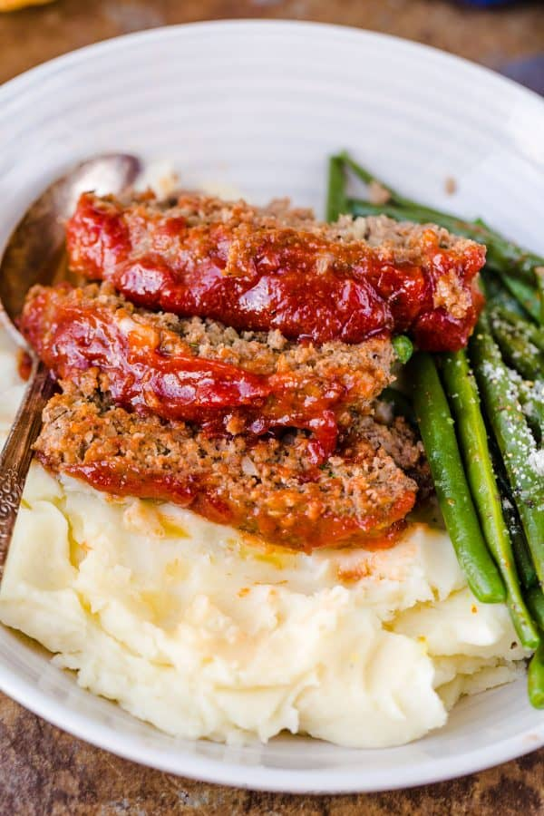

Meatloaf

Description
Amazing homemade Meatloaf Recipe. The meatloaf is so tender and juicy on the inside with a sweet and tangy glaze that adds so much flavor to the meatloaf. Serve the easy meatloaf with mashed potatoes and a side of asparagus.
Ingredients
- Ground Beef
- Onions
- Breadcrumbs
- Parsley
Steps
- Preheat oven to 350 degrees F (175 degrees C).
- In a large bowl, combine the beef, egg, onion, milk and bread OR cracker crumbs. Season with salt and pepper to taste and place in a lightly greased 9x5-inch loaf pan, or form into a loaf and place in a lightly greased 9x13-inch baking dish.
- In a separate small bowl, combine the brown sugar, mustard and ketchup. Mix well and pour over the meatloaf.
- Bake at 350 degrees F (175 degrees C) for 1 hour.